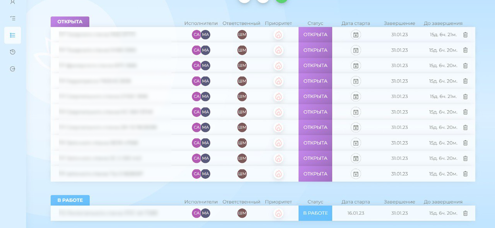
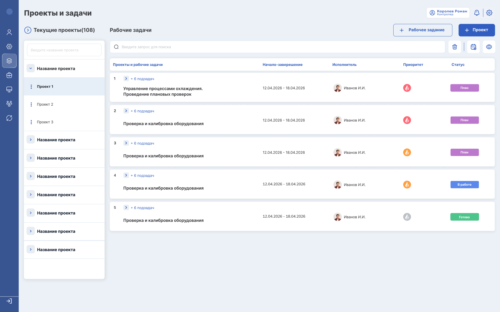
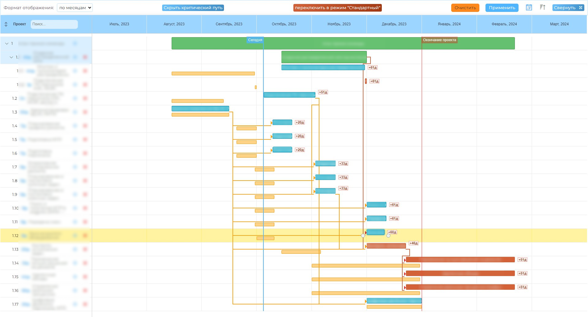
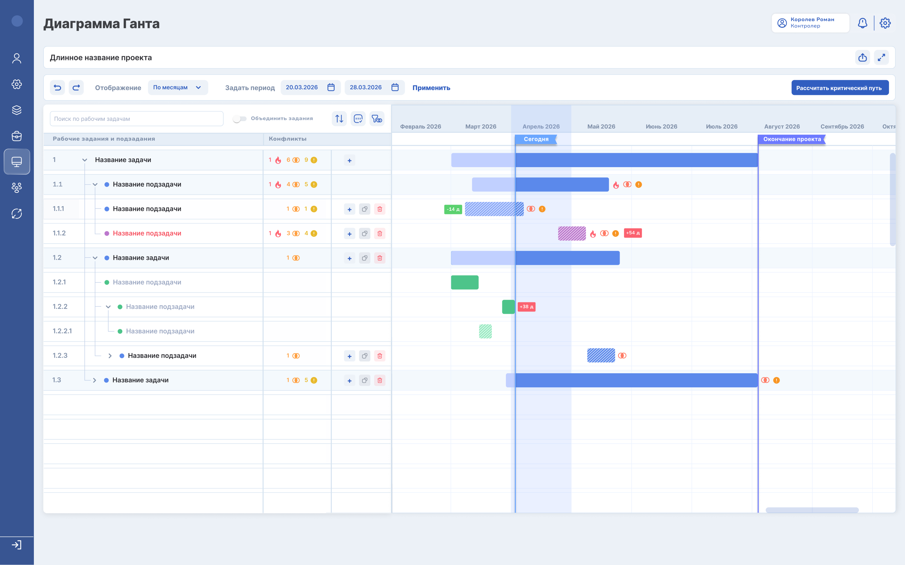
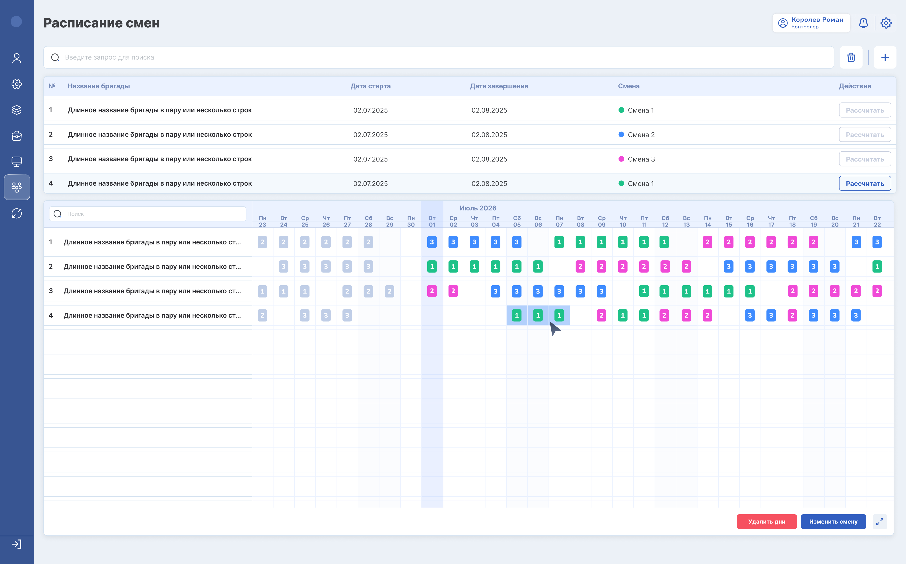
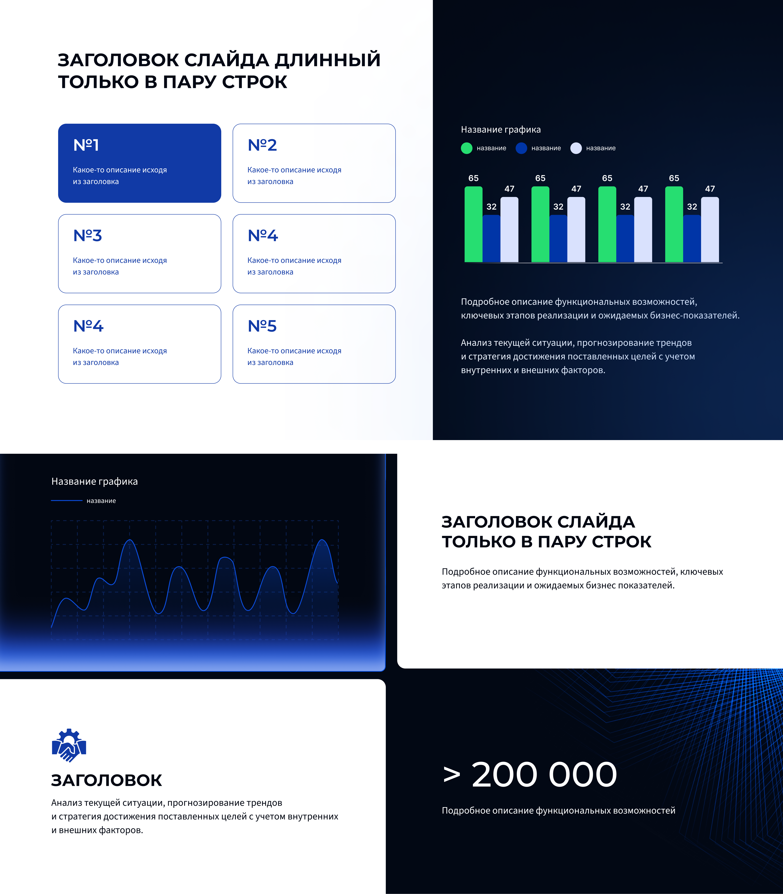
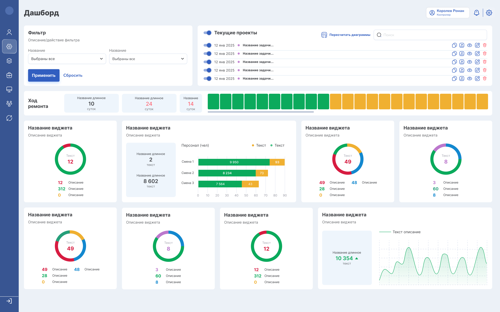
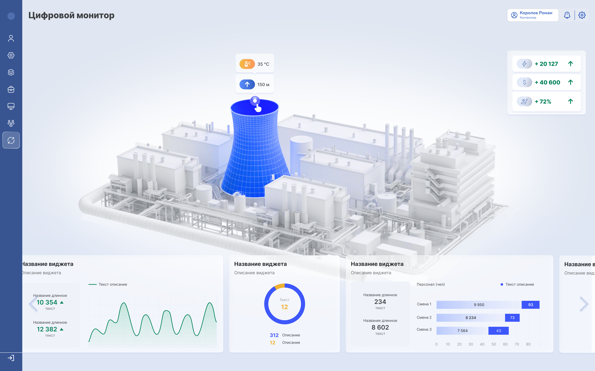
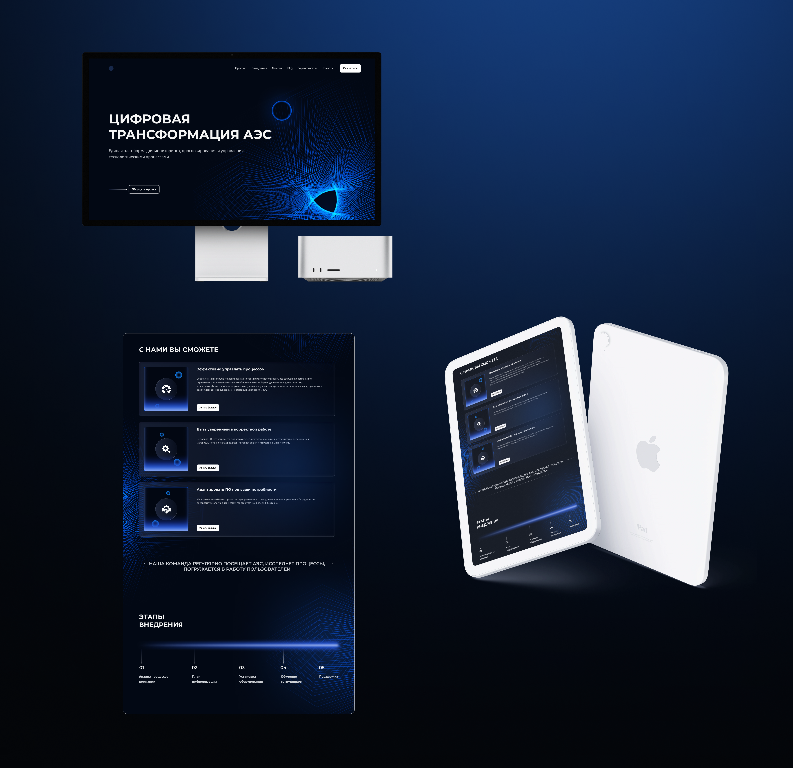
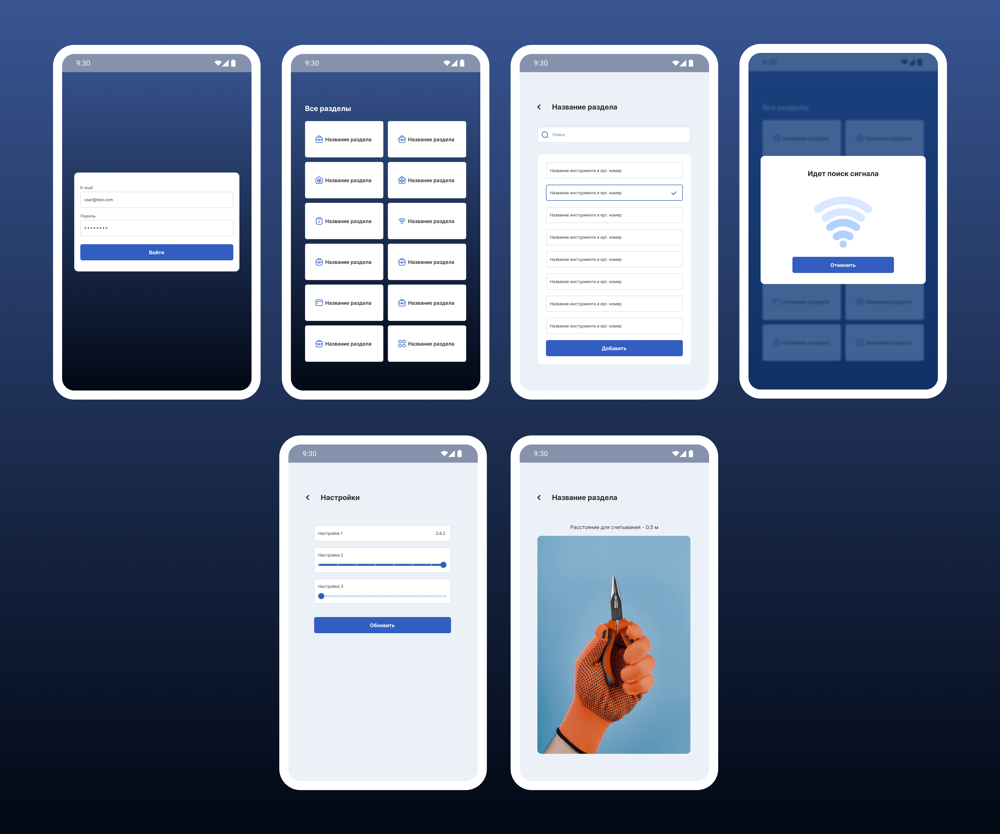

Привет, я
Product Designer
ОБО МНЕ
Профильное химическое образование + опыт работы со сложной бизнес-логикой.
Превращаю комплексные инженерные данные, мнемосхемы и процессы автоматизации в понятные цифровые системы.
- 3 в 1 Адаптирую сложные enterprise-интерфейсы под любые устройства и условия работы
- 200+ Экранов и детальных сценариев взаимодействия в рамках цифровизации АЭС
- −40% Уточняющих вопросов от разработчиков благодаря глубокой проработке User Flow
- 300+ млн ₽ Сумма промышленных грантов и сделок, закрытых с использованием моих материалов

Прототипирование
Внедряю процесс быстрой проверки гипотез до этапа кодинга
Полный цикл дизайна
От исследования и User Flow до интерактивных прототипов и передачи в разработку
Дизайн системы
Создаю и поддерживаю библиотеки компонентов для масштабирования продукта
Адаптивный дизайн
Делаю единый UX для веба, планшетов и мобильных устройств
КЛЮЧЕВЫЕ
КОМПЕТЕНЦИИ
Коммерческий дизайн
Готовлю презентации и инвестиционные материалы, которые помогают продавать
Коммуникация с командой
Работаю в связке с продукт-менеджерами, разработчиками, инженерами
КЕЙСЫ
Цифровизация АЭС


Бизнес-контекст:
Текущий интерфейс системы управления не учитывал специфику работы крупных инженерных отделов, из-за чего срывались сроки согласования технической документации.
Аудитория
Руководители среднего звена: Начальники бригад и мастера. Это люди, проживающие вне крупных городов, с низким уровнем цифровизации.
Моя задача:
Спроектировать понятную визуальную иерархию инженерных задач, оптимизировать карточки объектов и сократить время навигации сотрудников внутри системы.
Действия
- Провела аудит информационной архитектуры и вынесла критические дедлайны на первый план. Разработала систему гибкой фильтрации задач по блокам АЭС и цехам. Детально спроектировала сквозной User Flow задачи от выдачи главным инженером до отметки о выполнении линейным персоналом. Оптимизировала UX карточки, сократив количество кликов для прикрепления чертежей и отчетов.
Результат
- Сложная инженерная логика упакована в понятный интерфейс. За счет внедрения интерактивных прототипов и сквозных User Flows количество уточняющих вопросов от команды разработки снизилось на 40%.


Бизнес-контекст
Перед предприятием стояла стратегическая государственная задача по отказу от зарубежного ПО Primavera на критически важном объекте энергетики. Требовалось перенести управление масштабными многоуровневыми графиками ремонтов реакторных цехов в отечественный интерфейс, избежав сбоев в планировании.
Аудитория
Аудитория:Руководители среднего и верхнего звена, начальники бригад. Это люди, проживающие вне крупных городов, с низким уровнем цифровизации.
Моя задача
Спроектировать высоконагруженный интерфейс Диаграммы Ганта, способный бесперебойно отображать тысячи взаимосвязанных ремонтных работ и минимизировать риски человеческой ошибки.
Действия
- Изучила логику работы сотрудников станций в Primavera. Бережно перенесла привычные инженерные паттерны взаимодействия в новый интерфейс, чтобы исключить саботаж и необходимость долгого переобучения персонала. Разделила рабочие пространства под разные роли — от контроля главным инженером до детального планирования мастером бригады. Внедрила цветовую кодировку критического пути и систему умных подсказок при конфликтах в расписании.
Результат
- Создан эргономичный отечественный модуль Диаграммы Ганта, полностью замещающий зарубежный аналог. Система успешно передана в разработку и позволяет главным инженерам станций координировать ремонты без потери эффективности.

Бизнес-контекст
В старой системе планирования персонала логика подсчета смен работала некорректно и не учитывала динамическую замену бригад в процессе ремонта, из-за чего руководство видело ошибочные отчеты.
Аудитория
Руководители среднего и верхнего звена, начальники бригад.
Моя задача
• Переработать интерфейс планирования, предоставив руководству точные данные, а начальникам участков — удобный инструмент для оперативного изменения графиков.
Действия
- Спроектировала интерфейс в формате «единого окна», позволяющий управлять бригадами без лишних переходов. Разработала интерактивную таблицу, которая мгновенно перестраивает весь график при внесении точечных изменений, и скорректировала макеты после тестов и получения обратной связи.
Результат
- Логика расчетов полностью исправлена, и лица, принимающие решения (ЛПР), видят корректные данные. Новый функционал принят линейными руководителями без сопротивления и позволяет выполнять операции быстро.


Бизнес-контекст
Запросы на создание презентаций для инвесторов, грантов и крупных заказчиков поступали от отдела продаж хаотично и в режиме «нужно еще вчера». Отсутствие ТЗ и единого стиля порождало хаос, бесконечные правки и размывало образ компании на рынке.
Моя задача
Систематизировать процесс создания презентаций, убрать хаос во взаимодействии со специалистами по продажам (сейлзами) и разработать единый визуальный стандарт компании.
Действия
- Внедрила обязательный бриф-форму для быстрой фиксации четкого техзадания от продажников. Создала единую визуальную концепцию и собрала обширную библиотеку готовых шаблонов, позволяющую коммерческому отделу самостоятельно верстать типовые слайды.
Результат
- Время на уточнение ТЗ сократилось на 50%, а количество обращений к дизайнеру за рутинными слайдами упало в 2 раза. Внедрен единый стандарт бренда, а разработанные материалы помогли компании успешно закрыть сделки и гранты на сумму свыше 300 млн рублей.
Бизнес-контекст
РРазработчикам была непонятна сквозная логика переходов и краевые состояния интерфейса. Опираясь только на финальные экраны без прописанных сценариев, программисты допускали логические ошибки в коде. Это приводило к бесконечным переделкам, затягиванию сроков релизов и росту стоимости ИТ-производства.
Моя задача
Разработать и внедрить детальные интерактивные карты пользовательских путей (User Flows) как обязательный стандарт передачи дизайна в разработку.
Действия
- Проанализировала все скрытые сценарии, развилки и системные ошибки в интерфейсах АЭС. Связала экраны в логические цепочки, детально прописав, что происходит при каждом клике, ошибке сервера или пустом состоянии системы. Провела воркшоп для команды разработки, презентовала новый формат и зафиксировала правила чтения интерактивных схем.
Результат
- Команда разработки получила прозрачную карту логики. Количество уточняющих вопросов от программистов к дизайнерам в процессе верстки снизилось на 40%. Время на переделку некорректно написанного кода сократилось, что напрямую ускорило запуск новых модулей системы.
Бизнес-контекст
Из-за отсутствия четкой структуры в Figma разработчики часто заходили в рабочие черновики, путали незавершенные макеты с финальными, критиковали их и писали некорректный код, что приводило к лишним созвонам и конфликтам.
Моя задача
Навести порядок в рабочей среде Figma и выстроить прозрачный процесс передачи готового дизайна в разработку для снижения стоимости ИТ-производства.
Действия
- Инициировала и защитила перед дизайн-лидом новый бизнес-процесс работы. Разделила Figma на три жесткие зоны доступа: «В работе» (черновики), «На проверке» (согласование с бизнесом) и «Финальные макеты» (утверждено для кода). Настроила права доступа и зафиксировала правила перевода задач между зонами.
Результат
- Вмешательство в черновики прекратилось, конфликтные ситуации минимизированы. Команда получила 40% экономии времени при работе с макетами, что напрямую снизило общую стоимость разработки.

Бизнес-контекст
• Переход предприятия от устаревшей модели ремонтов «по регламенту» к современной модели обслуживания «по состоянию». Требовалось снизить аварийные простои оборудования за счет внедрения предиктивной аналитики на базе ИИ.
Аудитория
Руководители среднего звена: Начальники бригад и мастера. Это люди, проживающие вне крупных городов, с низким уровнем цифровизации.
Моя задача
Перевести сложнейшие математические модели прогнозирования отказов оборудования и терабайты данных с датчиков в понятный графический интерфейс для инженеров по надежности.
Действия
- Спроектировала систему графиков, трендов и гистограмм, наглядно показывающую динамику износа крупных узлов и агрегатов (турбин, насосов). Разработала трехуровневую систему критичности уведомлений о потенциальных поломках (алармов), исключающую «замыливание глаз» оператора. Создала логику быстрого перехода от общего состояния станции к детальным графикам конкретного подшипника за один клик.
Результат
- Интерфейс успешно внедрен в ИТ-архитектуру. Благодаря четкой визуальной иерархии больших данных инженеры по надежности могут обнаруживать аномалии и риски в работе оборудования на 20% быстрее.

Бизнес-контекст
Диспетчерам и операторам крупных промышленных объектов сложно сопоставлять сухие текстовые логи и таблицы с сотен тысяч датчиков с реальным физическим расположением оборудования на огромной территории станции.
Аудитория
Руководители среднего звена: Начальники бригад и мастера. Это люди, проживающие вне крупных городов, с низким уровнем цифровизации.
Моя задача
• Спроектировать сквозной интерфейс единого цифрового монитора, связывающий интерактивную 3D-модель АЭС с живыми потоками телеметрии и показаниями техпроцессов.
Действия
- Разработала пространственную логику взаимодействия (Spatial UX) с 3D-моделью станции для мгновенного «перемещения» оператора между зданиями, этажами и цехами. Настроила вызов контекстных мини-дашбордов с ключевыми метриками (КПД, выработка, температура) при клике на физический объект на схеме. Применила профильное химическое образование для корректной группировки химико-технологических параметров очистки воды и контуров охлаждения. Использовала строгую палитру для снижения зрительной усталости при 12-часовых сменах.
Результат
- Создана эргономичная система верхнего уровня (Digital Twin). Операторы получили возможность визуально локализовать аварийный датчик на трехмерной модели за секунды, что критически важно для безопасности АЭС.

Бизнес-контекст
У компании отсутствовала единая и понятная точка входа для привлечения потенциальных b2b-заказчиков и сбора заявок на ИТ-продукты/услуги. Существующие текстовые материалы были слишком сложными для восприятия потенциальными клиентами, что снижало конверсию в продажи.
Моя задача
Спроектировать понятную структуру продающей страницы (Landing Page), которая переведет сложную техническую ценность продукта на язык выгод для бизнеса и обеспечит стабильный поток заявок.
Действия
- • Провела анализ целевой аудитории (CJM заказчика) и выявила их главные боли и критерии выбора. Разработала информационную архитектуру страницы, разбив её на логические блоки: от УТП и демонстрации возможностей продукта до закрытия возражений и форм захвата. Спроектировала адаптивные макеты для десктопных и мобильных устройств, уделив особое внимание читаемости текстов и контрастности СТА-кнопок.
Результат
- Создан логичный, визуально чистый и продающий интерфейс страницы, который успешно выполняет роль главного конвертера трафика. Инструмент полностью закрыл потребность маркетинга в сборе заявок, а структура страницы позволила пользователям быстрее считывать ценность предложения.

Бизнес-контекст
Линейный персонал (обходчики) был вынужден фиксировать дефекты оборудования на бумажных носителях, а затем вручную переносить их в ПК. Это затягивало устранение поломок. При этом условия работы в машинном зале экстремальные: высокий уровень шума (до 90 дБ), вибрация и недостаточное освещение.
Моя задача
Спроектировать интерфейс мобильного рабочего места ТОиР (Техническое обслуживание и ремонты) для быстрой фиксации дефектов «на ходу» в условиях агрессивной производственной среды.
Действия
- Рассчитала и увеличила кликабельные зоны (Touch Targets) элементов до максимальных размеров для безошибочного ввода данных в защитных перчатках и при сильной вибрации. Усилила общую контрастность элементов по стандартам WCAG и разработала специальную темную тему для комфортного считывания информации в темноте. Заменила длинные текстовые поля ввода на крупные пошаговые чек-листы и селекторы. Разработала логику офлайн-режима для железобетонных бункеров с последующей автосинхронизацией.
Результат
- Разработан отказоустойчивый мобильный интерфейс, который сократил время фиксации дефекта на объекте на 45%. Скорость передачи данных о поломках в ремонтную службу выросла в несколько раз.